<!DOCTYPE html>
<html id="top">
    <meta name="viewport" content="width=device-width, initial-scale=1">
<head>
<title>Manifest Machine</title>
<link rel="stylesheet" href="style.css">
<link rel="stylesheet" href="https://unpkg.com/flickity@2.2.2/dist/flickity.min.css" media="screen">
<link href='https://fonts.googleapis.com/css?family=Quicksand' rel='stylesheet'>
<link href='https://fonts.googleapis.com/css?family=Raleway' rel='stylesheet'>
<link rel="stylesheet" href="https://www.w3schools.com/w3css/4/w3.css">

<script src="https://unpkg.com/flickity@2.2.2/dist/flickity.pkgd.min.js"></script>

<script src="https://cdnjs.cloudflare.com/ajax/libs/socket.io/2.0.3/socket.io.js"></script>
<script src="https://ajax.googleapis.com/ajax/libs/jquery/3.5.1/jquery.min.js"></script>
<script src="https://unpkg.com/axios/dist/axios.min.js"></script>
<script src="script.js"></script> 
<script src="modal.js"></script> 

<script>

// socket connection to server.js
var socket = io.connect(); //load socket.io-client and connect to the host

function LEDOn() {
    socket.emit("state", 1); //send button state to server
console.log("button pressed");
}

function LEDOff() {
    socket.emit("state", 0); //send button state to server
}


function MessageLanding(){
    d = new Date().toString();
    
    socket.emit("message", d);
    
    console.log("message", "welcome message send");
}

function MessageSign(){
    var nameSig = document.getElementById("nameSig").value;
    
    socket.emit("sign", nameSig); //send button state to server
    console.log("welcome message send");
}

function MessageContribute(){
    var name = document.getElementById("nameCard").value;
	var manifestInput = document.getElementById("cardInput").value;
    var d = new Date().toString();

    socket.emit("text", manifestInput ); //send button state to server
    setTimeout(() => { console.log("World!"); }, 500);
  
    socket.emit("name", name ); //send button state to server
    setTimeout(() => { console.log("World!"); }, 500);
    
    
    
    // socket.emit("message", manifestInput); //send button state to server
    // setTimeout(() => { console.log("name send to printer"); }, 500);
    // socket.emit("message", name ); //send button state to server
    console.log("text send to printer");

}


</script>
 
</head>
<body>

<div class="header">
    <div class="textFlex">
        <p id="alignLeft" class='textHeading'>_Open 8:00-20:00 🕗</p>
        <p class='textHeading' > _Eindhoven 🌍</p>
        <p class='textHeading'>_ActiveVisitors:1 👀</p>
        <p class='textHeading'>_Online 🟢</p>
    </div>
    </div>
<div class="front">


<div class="bg"></div>

<div class="titlePage">
<h1 id="title">_Huddle </h1>
    
    <p id="subTitle">The nomad server where the digital design manifest is kept and collectively writen.</p>

</div>


<div id="numbersEngagement">
<p class='textEngagement'>Signatures<span id="amountSig">
    0</span></p>
    <p class='textEngagement' >Contributors<span id="amountCont">
    0
    </span></p>
</div>
</div>
<div class="wrapper"> 

    <div class="flexVersion">
    <p id="version">Current version: V 1.0.0<br>
        Next release: 10-05-2021</p>

        <a href="#" class="versionButton">Version History 🕙</a>
    </div>

<div class="currentManifest">

    <h1 id="manifestTitle">The Digital Design Manifest</h1>
<div id="manifestText">
<p  >
    The craft of interaction design is failing to serve humans. </p>

<p>Products and services are optimized for efficiency and standardization valuing profit over privacy. 
We, humans, are becoming the product to be consumed by our technologies. </p>

<p>Addicted by design.</p>
<p>

I believe that good interaction design can also be the remedy to this issue. Creating humane technology that operates for the common good, strengthening our capacity to tackle our biggest global challenges. 
Celebrating fluidity, creating interactions that trigger reflection and empower users. 
</p><p>
Designing things away and creating hacks.
   
</p>

<p>
    To achieve this, we need to identify different design handles that we can use in our design process.
</p>


<p>
Design handels<br>
🪢 Friction to create a moment of reflection and empowerment.<br>
👀 Visibility show what is going on so people can take a stance.<br>
🔋 Disposability of content and update rate of our digital lives.<br>

</p>


</div>
</div>


<div class="flexSign">
   <p class="textCall">Do you agree with this manifest, you can sign it to show your support. </p>
    <input placeholder="Your name" id="nameSig"></input>
    <a href="#top" onclick="onSign(); 
    MessageSign()" id="signButton">Sign 🖋️</a>
    <p class="textCall">Find out how you can contribute to this manifest below.</p>

</div>


<div class="section">

<h2 class="title">Contribute to the manifest by donating your thoughts</h2>
<p class="text">This manifest is a living document. As individuals, we can not take up the challenge to solve this big issue, but together we can craft a text that can take a stance and inspire the industry. By donating your thoughts to this project you contribute. Your take on this issue will be added to the manifest and visible to the community as an inspiration. 
   </p> <h5 class="questions">How do you think interaction design can work towards an empowering relationship with technology? How can we change our mindset towards the digital to create a sustainable relationship with it? What design handles do you think we can use to achieve this?
   </h5>


<div id="inputCard">

<textarea id="cardInput" placeholder="Type here..." rows="15" cols="50"></textarea>
<input id="nameCard" placeholder="Your name" ></input>
<a href="#top" onclick="onClickSubmit(); 
MessageContribute()" id="submitCard">Submit 💌</a>

</div>

<h3 id="examplecardtext">Donations from other contributors</h3>


  <div class="carousel"
  data-flickity='{ "imagesLoaded": true, "prevNextButtons": false, "percentPosition": false, "initialIndex": 1}'>
  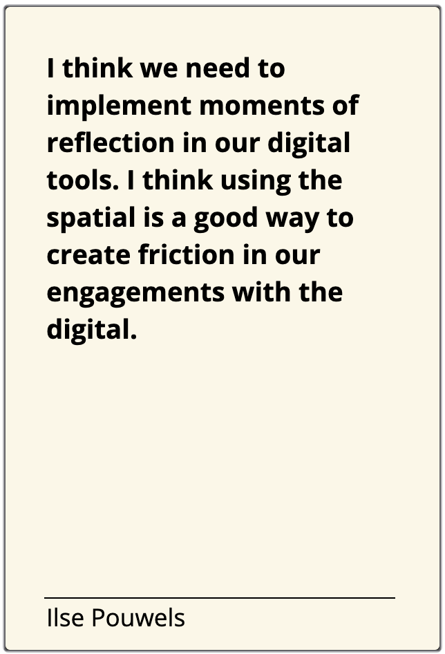
  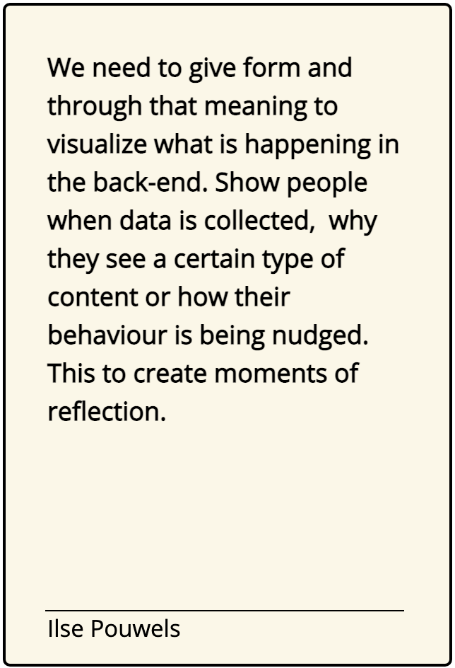
  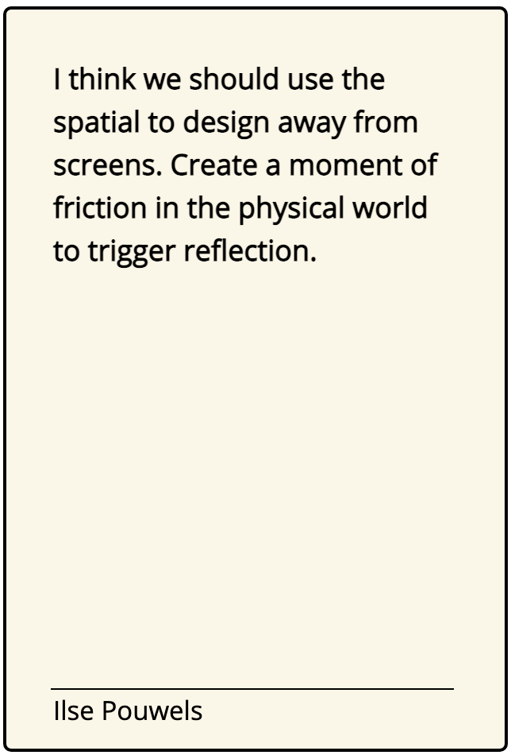

</div>

</div> 


<div class="section" >

    <h2 class="title" >About this project</h2>
    <p class="text">As a graduating interaction design student, I saw the need to explore how can design for empowering sustainable relationships with the digital. By observing the world around me I see that the "things" we interact with are becoming complex living systems. The designers' job is to visualize certain aspects of this in the UI, but what about the aspects that we can't see? Data collection, algorithms optimized for consumption and addiction, the energy consumption of these systems. This project was aimed to explore alternatives; create hacks and design things away to inspire that alternatives are possible. </p>
    <p class="text">Where does this project live? This whole website is hosted on the manifest machine that lives in Eindhoven.The reason for this is to put the principles proposed above put in practice imediatly. With project running on a server owned by me, I take responsibility over the project. </p>

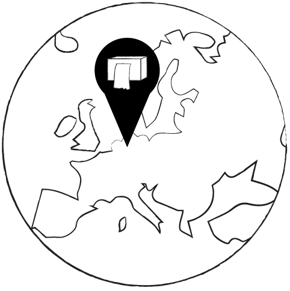
<h3 id="eindhovenTitle">EINDHOVEN, NL</h3>

<p class="text">The nomad server is printing out a log of every interaction. When people like you visit this website, sign the manifest or contribute to the project by submitting a card. This is your dialogue with the server, by making it physically available in Eindhoven and through the stream for anyone worldwide it aims to give transparency. </p>

<div class="modelImages">
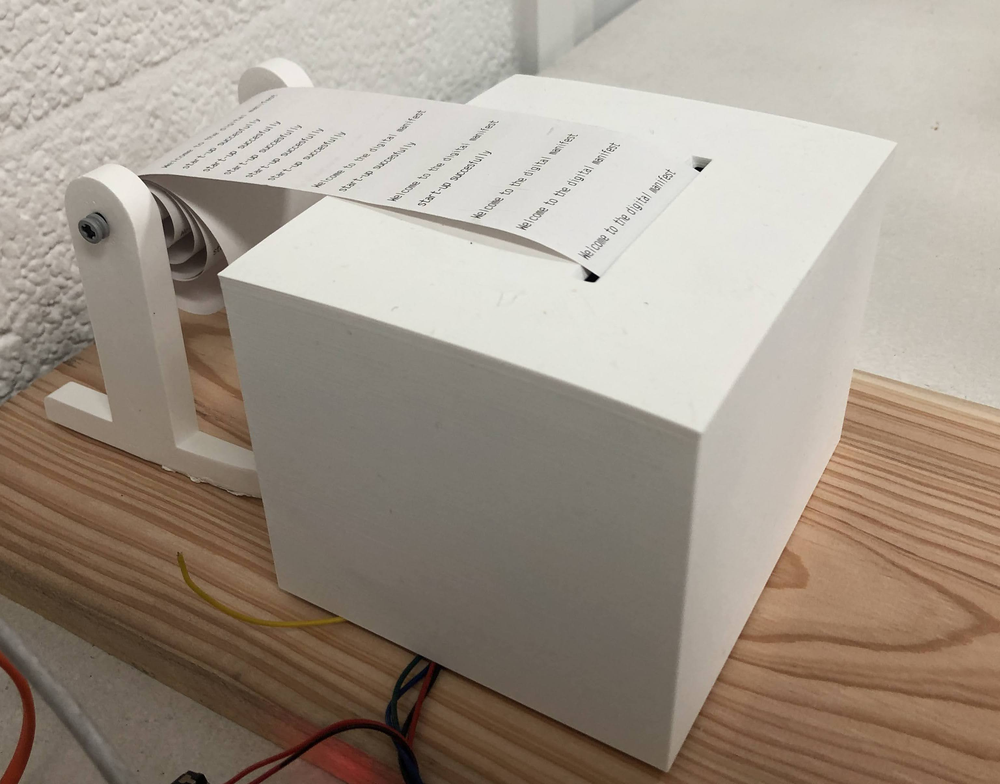
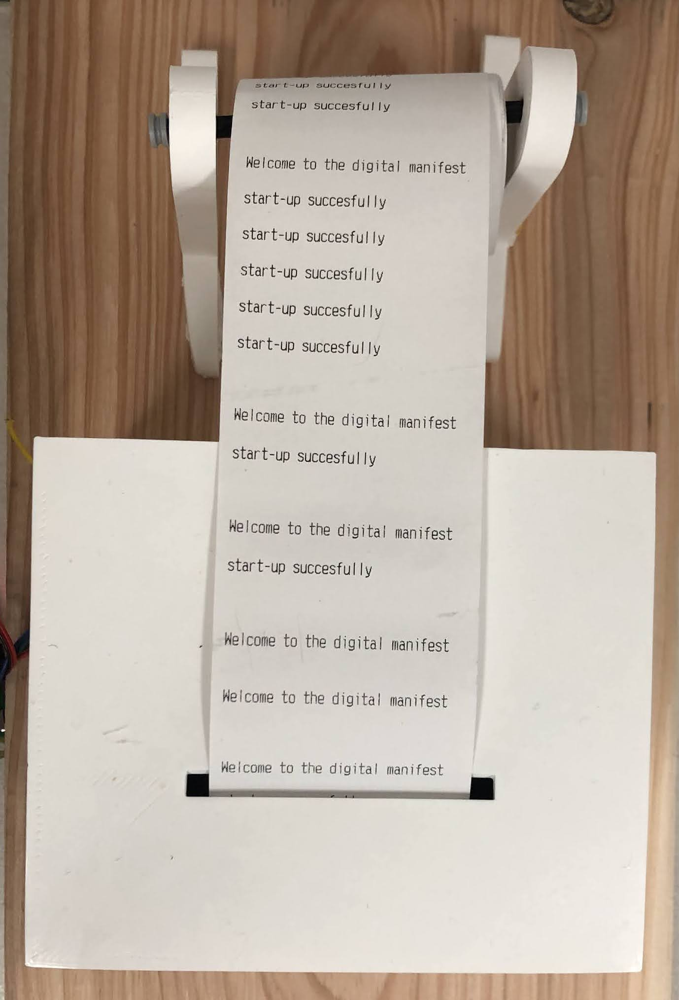
</div>


    <h3 class="title" >Experiments</h3>
    <p class="text">The first three design handles of the manifest are derived from experiments done as part of the thesis Undermine_through_design by Ilse Pouwels. These experiments explored hacks or interventions to challenge our relationship with the digital.</p>


<div class="experiments">
    <div>
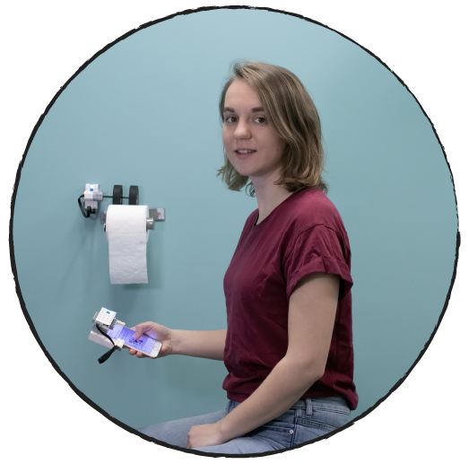
<h3 id="eindhovenTitle">The Toilet(sc)roller</h3>
</div>

<div id="id01" class="w3-modal">
    <div class="w3-modal-content">
      <div class="w3-container"> 
          <span onclick="document.getElementById('id01').style.display='none'" class="w3-button w3-display-topright">&times;</span>
         
        <div class="image-container">
       
        
        
        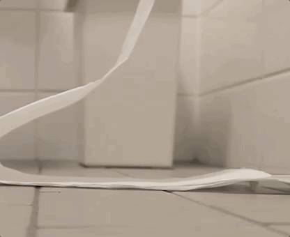
    </div>
    <div class="textModal">
        <h5>The Toilet (sc)roller</h5><p>Are we more aware of our behaviour when it is reflected by the space around us?<br>Using our physical surroundings to create friction in our engagements with the digital.</p>
      </div>
    </div>

      
      
    </div>
  </div>

<div>
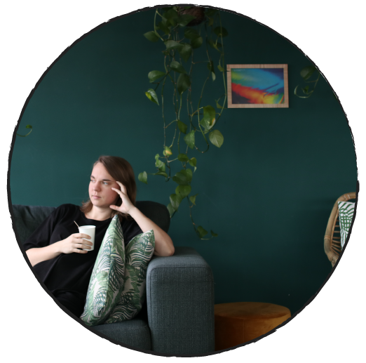
<h3 id="eindhovenTitle">Singel Frame Feed</h3>
</div>

<div id="id02" class="w3-modal">
    <div class="w3-modal-content">
      <div class="w3-container"> 
          <span onclick="document.getElementById('id02').style.display='none'" class="w3-button w3-display-topright">&times;</span>
         
        <div class="image-container">
       
        
        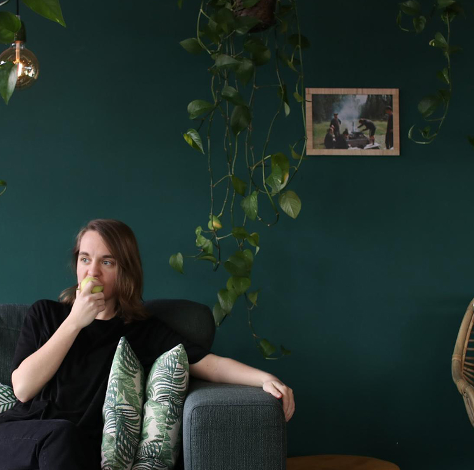
        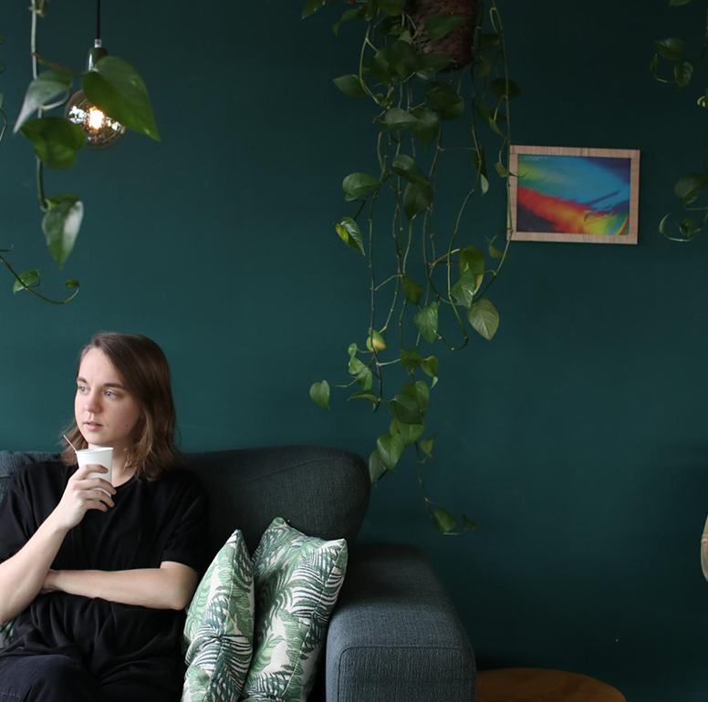
    </div>
    <div class="textModal">
        <h5>Single Frame Feed</h5><p>What if we had to live with a single frame of our feed for 24h? By changing the update rate do we value our content more? <br>Do content makers become artist exhibiting in peoples houses?
          Who deciedes which content is shown, us or an algorithm?  
        By altering the update rate we might revalue our content, this to counter our disposable mindset we have towards our data.</p>
      </div>
    </div>

      
      
    </div>
  </div>


<div>
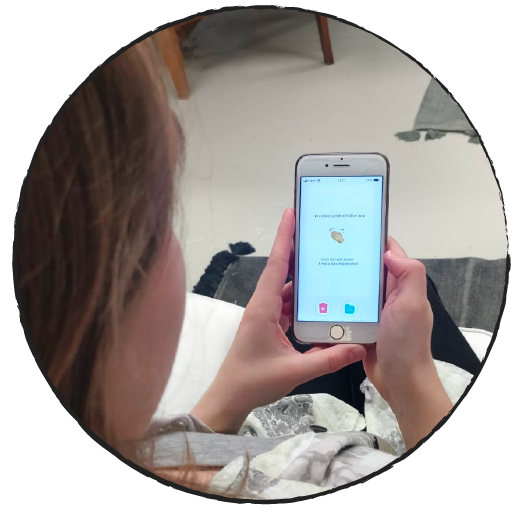
<h3 id="eindhovenTitle" >Data unmatcher</h3>
</div>

<div id="id03" class="w3-modal">
    <div class="w3-modal-content">
      <div class="w3-container"> 
          <span onclick="document.getElementById('id03').style.display='none'" class="w3-button w3-display-topright">&times;</span>
         
        <div class="image-container">
       
        
        
        
    </div>
    <div class="textModal">
        <h5>Data unmatcher</h5><p>How could an offboarding experience with your data look like? Are we aware of the amount of data we have? Do we still need this data?<br>Why do we clean-up our oceans but not our servers?<br>
            When we visualize our digital traces and present them to people we can actively take responsibility.</p>
      </div>
    </div>

      
      
    </div>
  </div>


</div>


</div>

<div class="section contactSection">

    <h2 class="title" >Any thoughts about this project or just want to chat <br> don't hesitate to hit me up 👋.</h2>
    <p id="textContact">
        📧 ilsepouwels.design@gmail.com<br>

        Project by Ilse Pouwels <br></p>
        <p id="thesisdisclaimer">
        This website is one of the outcomes of the thesis project for MFA Interaction Design at the Umeå Institute of Design


    </p>


</div>


</body>
<script>
MessageLanding();

    
</script>
</html>
